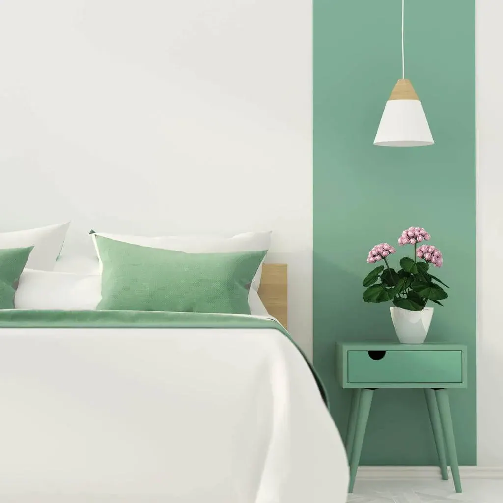

¿Cómo amueblar un dormitorio pequeño?

¿Por qué un canapé abatible?
En situaciones en las que el eje central es un dormitorio pequeño, tenemos que organizar el espacio en torno a un canapé abatible. En los últimos años, cada vez es más frecuente encontrarnos con apartamentos donde los metros escasean, y directamente proporcional a esta tendencia, es el auge del mobiliario que combina varias funcionalidades. En el caso del canapé abatible, este hará de base para nuestro colchón además de amplio espacio de almacenamiento.
¿En qué fijarse para elegir un canapé abatible?
Lo ideal es que si buscamos almacenamiento extra, centremos la atención en la capacidad útil del canapé, donde combinando las tres dimensiones del cajón, podemos hallar gran variabilidad de metros cúbicos de espacio. En el caso de los canapés abatibles de Lo Monaco, estos cuentan con una gran capacidad de almacenamiento en su interior. Disponibles en 27 medidas diferentes, el volumen del cajón oscila entre los 302 litros (para la medida inferior de 80×182), 630 litros para la medida de 150×200, llegando hasta los 840 litros para la medida superior de 200×200.
Deberíamos fijarnos, de la misma manera, en el sistema de apertura del canapé abatible: es fundamental que la tapa del mismo se abra de forma suave y prolongada, para que no nos suponga mucho esfuerzo llegar hasta el interior del cajón.
Por último, pero no menos importante, es recomendable elegir un canapé abatible con una estética lo más atemporal posible: con colores suaves y diseño que le permita adaptarse a cualquier dormitorio.
¿Cómo ordenar un canapé abatible?
Para optimizar el espacio de uso de tu canapé abatible, lo ideal es establecer una planificación previa en cuanto al orden en el que debemos seleccionar los elementos que queremos guardar, clasificándolos según su uso. Así, estarían más a mano los que más usamos, y al fondo irían los que nos hacen menos falta.
Pongamos un ejemplo: si lo que queremos guardar es ropa. Primero, deberíamos ponerla en bolsas o cajas, para protegerla de los olores indeseados y de la humedad. También podemos usar compartimentos de ropa que, entren en el cajón del canapé. Lo mismo ocurre con la ropa de cama: con el cambio de estación, lo más habitual es, cambiar las sábanas gruesas de invierno, junto con las mantas o el edredón nórdico. Artículos como estos, los ponemos debidamente guardados (en bolsas o cajas) al fondo del canapé abatible, para sacarlos impecables y usarlos el próximo invierno.
¡Ojo con sobrecargar el canapé! A pesar de su gran capacidad, su interior tiene un límite en cuanto a peso y volumen que soporta. Si queremos conservar nuestro canapé abatible como el primer día, deberíamos tener en cuenta estos dos factores. No forzar la tapa si vemos que el canapé no cierra correctamente, lo más seguro es que sobra algo dentro.
Limpieza del canapé abatible
Ya tenemos nuestro canapé ordenado, optimizando al máximo el espacio en su interior. Como es de intuir, gran parte de su contenido no lo usaremos hasta dentro de unos meses. A pesar de que el canapé normalmente se encuentra cerrado, su interior está expuesto a la suciedad y la acumulación de polvo y humedad, por lo que tenemos que preocuparnos y limpiarlo con cierta frecuencia. Así, cuando nos toque sacar las cosas que hemos guardado, éstas estarán en perfectas condiciones para su uso inmediato.
Es recomendable que nuestro canapé abatible tenga patas (de unos 5 cm como mínimo) para que nos resulte más fácil limpiar debajo del mismo. Por otro lado, para retirar el polvo de las paredes y su interior, usaríamos un trapo húmedo.
Por último, para evitar los malos olores y la humedad, existen una serie de trucos caseros que suelen ser bastante efectivos. Por ejemplo, colocar bolsitas de lavanda, así como granos de arroz o café, este tipo de plantas son doblemente beneficiosas ya que desprenden olores agradables a la vez que recogen la humedad. Una cajita de bicarbonato (siempre abierta) o la madera de cedro también cuentan con estas propiedades.